니콜은 누구이고 어떻게 시작했나요
주인공 니콜은 2년 동안 앱 네 개를 만든 소비자용 앱 창업가예요. 아래 화면은 니콜의 X 프로필이에요. 소개 글에 'I build viral apps(바이럴 앱을 만들어요)'라고 적혀 있어요. 니콜은 직접 코딩하지 않아요. 디자인과 유통처럼 코딩이 아닌 일을 모두 맡아요.
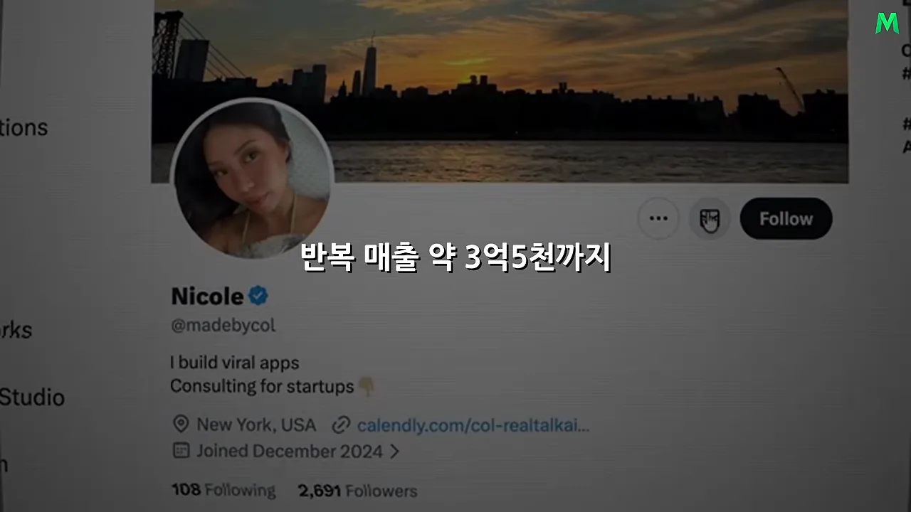
첫 앱 글램업은 본격적으로 키운 지 6개월 만에 사용자 100만 명을 모았어요. 화면 왼쪽 위 글귀가 니콜이 직접 한 말이에요. 'got a million users in 6 months, and we were at peak'까지 보이고, 이어서 최고 월 반복 매출이 15만 달러(영상은 약 2억 원으로 옮겼어요)였다고 말해요.
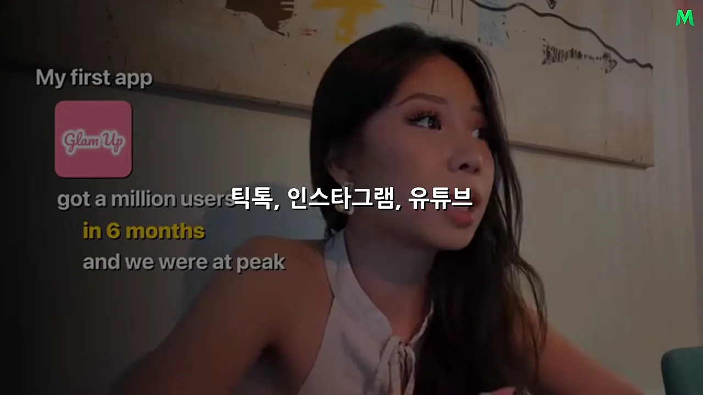
원래 인터뷰는 처음에 이야기 순서를 세 칸으로 보여 줘요. ① 각각 월 15만 달러를 버는 앱 두 개, ② 바이럴 유통 시스템, ③ 단계별 성장 플레이북이에요. 이 문서도 이 순서를 따라가요.
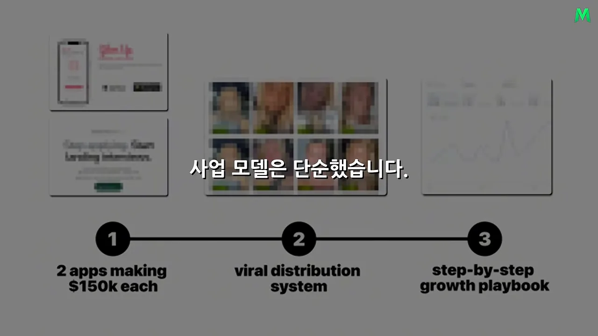
유럽 여행과 틱톡, 그리고 10분짜리 통화
니콜은 처음부터 앱을 알던 사람이 아니에요. 대학 시절엔 부동산이나 컨설팅 쪽을 생각했어요. 2학년 때 진로 고민 끝에 혼자 유럽으로 떠났고, 틱톡에 팟캐스트 형식 영상을 올렸어요. 첫 10일 만에 팔로어가 1만 명쯤 늘었어요. 사람들이 어떤 콘텐츠에 반응하는지 처음 몸으로 겪은 경험이에요.
그래도 인플루언서 길은 택하지 않았어요. 샌프란시스코의 기술 스타트업에서 마케팅 일을 했고, 거기서 공동 창업자 에런 폴을 만나요. 아래 화면이 에런의 링크드인이에요. 'Co-founder & CEO @ Stealth'와 Y Combinator 이력이 보여요.
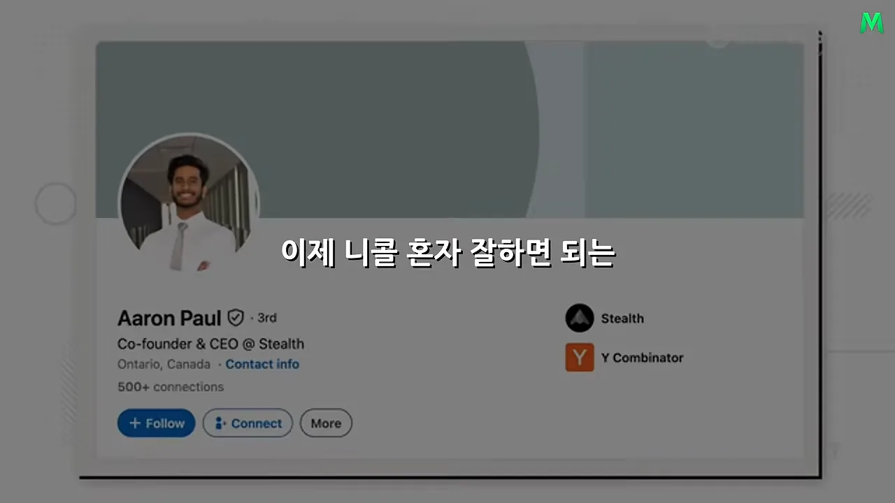
이미 증명된 수요를 옮겨 온 두 앱
글램업은 세상에 없던 아이디어가 아니었어요. 당시 남성의 외모 개선을 돕는 앱이 이미 돈을 벌고 있었어요. 아래 화면이 그 앱 Umax의 앱스토어 페이지예요. 얼굴 점수를 매기는 화면들이 보이고, 아래 노란 글귀가 'VALIDATE A PROVEN CONCEPT(이미 증명된 개념을 확인하라)'예요.
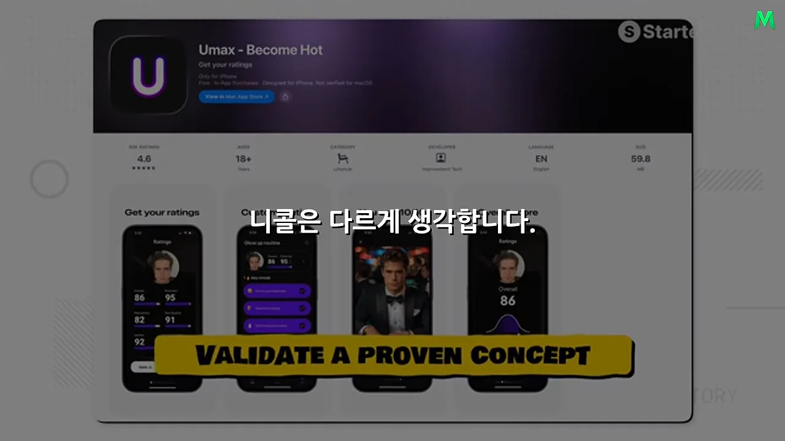
니콜과 에런은 같은 경험을 여성의 메이크업·뷰티 시장에 옮길 수 있다고 봤어요. 앱스토어를 보니 여성용으로는 비슷한 앱이 거의 없었어요. 성공 공식을 그대로 베낀 게 아니라, 증명된 수요를 다른 고객층에 맞게 다시 짠 거예요.
글램업: 셀카로 받는 뷰티 상담
아래는 글램업 웹사이트(glamup.ai)예요. 휴대폰 화면에 'Ready to Glam Up?'과 'Glow Up Guide' 카드가 보여요. 사용자가 셀카를 올리면 얼굴을 바탕으로 색상 분석을 받고, 어울리는 스타일, 외모 개선 가이드, 제품 추천을 받아요. 아래 노란 숫자 중 왼쪽은 등록 사용자 1,000,000명이에요. 오른쪽 달러 금액은 화면에 설명이 없어서 무엇을 뜻하는지 단정하지 않을게요.
사업 모델은 단순해요. 모든 기능을 공짜로 열어 두지 않고, 핵심 기능은 결제해야 쓸 수 있어요. 니콜은 원래 인터뷰에서 이걸 하드 페이월이라고 불러요. 매출은 주간 또는 월간 구독으로 나와요.
스프라우트: 넘기면 지원되는 채용 앱
두 번째 앱 스프라우트는 처음엔 다른 이름(영상은 '프리페어 AI'라고 불러요)으로 시작했어요. 이번엔 뷰티를 벗어나 대학생과 졸업 후 취업 준비생을 겨냥했어요. 원래 인터뷰에선 이들이 구매력이 더 높아서라고 말해요. 아래 화면처럼 회사 이름, 직무(Software Engineer), 조건 태그가 담긴 공고 카드가 한 장씩 나와요. 맨 아래에 '10 million jobs'와 Sprout 로고가 보여요.
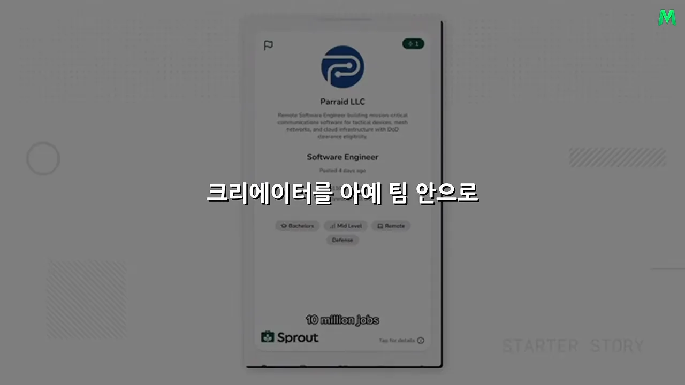
앱을 처음 열면 몇 가지 질문에 답해요. 그 답에 맞는 공고가 나오고, 오른쪽으로 넘기면 실제 회사 웹사이트로 지원하도록 도와줘요. 지원하는 회사에 맞춰 이력서를 고쳐 주는 기능도 있어요.
| 앱 | 누구를 위한 앱인가요 | 무엇을 해 주나요 | 성과 |
|---|---|---|---|
| 글램업 | 메이크업·스킨케어를 개선하고 싶은 여성 | 셀카 기반 색상 분석, 스타일·외모 개선 가이드, 제품 추천 | 6개월에 사용자 100만 명, 다운로드 약 200만 건, 최고 월 반복 매출 약 2억 원 |
| 스프라우트 | 대학생, 졸업 후 취업 준비생 | 맞춤 채용 공고, 넘겨서 지원, 회사별 이력서 수정 | 8개월에 월 반복 매출 약 3억 5천만 원 |
| 비공개 앱 두 개 | 아직 공개하지 않았어요 | 최근 몇 달 사이에 만들었고, 빠르게 크는 중 | |
원화 금액은 내레이터가 달러를 바꿔 말한 거예요. 원래 인터뷰에서 니콜은 글램업 최고 15만 달러, 스프라우트 약 25만 달러라고 말해요. 비공개 앱 두 개는 '약 20만 달러'라고만 말해서, 각각인지 합친 건지는 분명하지 않아요. 영상은 '각각 월 수억 원'이라고 옮겼어요.
앱을 만들 때부터 유통을 같이 설계해요
서로 다른 앱에서 비슷한 결과가 계속 나왔다면 운만으로는 설명하기 어려워요. 니콜에게는 매번 쓰는 방식이 있었고, 그 출발점은 제품과 마케팅을 따로 생각하지 않는 거예요.
홍보는 출시 직전이 아니라 설계 단계부터
많은 창업가는 기능을 완성하고 디자인을 끝낸 다음, 출시 직전에야 '이걸 어떻게 알리지?'를 고민해요. 니콜은 앱을 설계할 때부터 유통을 같이 생각해요. 사용자가 처음 여는 화면, 온보딩에서 던질 질문, 앱의 가치를 이해시키는 순서, 결제 화면을 띄우는 시점까지요. 이게 모두 전환율과 이어져요.
아래 화면이 그 결과를 보여 줘요. 페이월 도구 Superwall의 대시보드 두 장이고, 원래 인터뷰에서 니콜은 이걸 글램업의 iOS와 안드로이드 성장 화면이라고 설명해요. 왼쪽 iOS 쪽은 2024년 4월 1일부터 2026년 3월 27일까지 총수익 $646,118, 결제 화면을 본 비율(Paywall Rate) 86.52%, 첫 결제 전환율(Initial Conv. Rate) 4.23%예요. 오른쪽 안드로이드 쪽은 신규 사용자가 1,045,315명이에요.
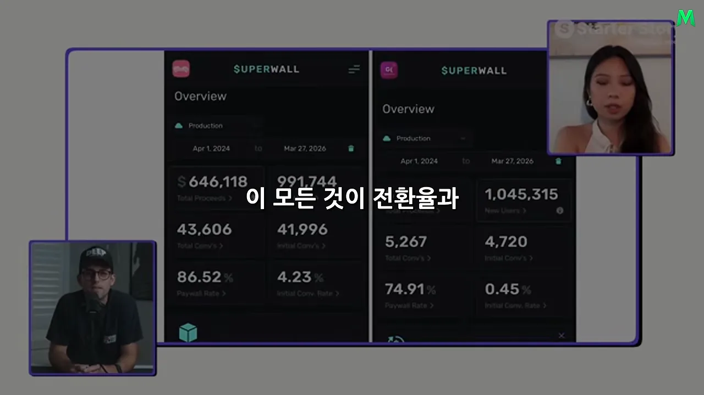
앱을 쓰는 모습이 콘텐츠가 되는가
전환율만큼 중요한 게 하나 더 있어요. 앱 자체가 소셜 미디어에서 퍼질 수 있는 구조인지예요. 니콜은 세 가지를 봐요.
- 사용자가 앱을 쓰는 모습이 그대로 콘텐츠가 될 수 있나요?
- 앱이 만든 결과를 짧은 영상이나 이미지로 보여 줬을 때 사람들이 관심을 가지나요?
- 그 콘텐츠를 본 사람이 '저 앱은 뭐지?' 하고 자연스럽게 궁금해지나요?
앱을 다 만든 뒤 광고 소재를 억지로 짜내는 게 아니라, 앱 경험이 처음부터 콘텐츠를 만들기 쉬워야 한다는 뜻이에요. 셀카를 올리면 달라진 얼굴이 나오는 글램업이 딱 그런 경우예요.
소비자 앱의 유통은 몇 억 회 단위예요
아래는 스프라우트의 매출 그래프예요. 2025년 10월 2일 기준 월 반복 매출이 253,605달러로 찍혀 있고, 오른쪽 끝으로 갈수록 선이 가파르게 올라가요.
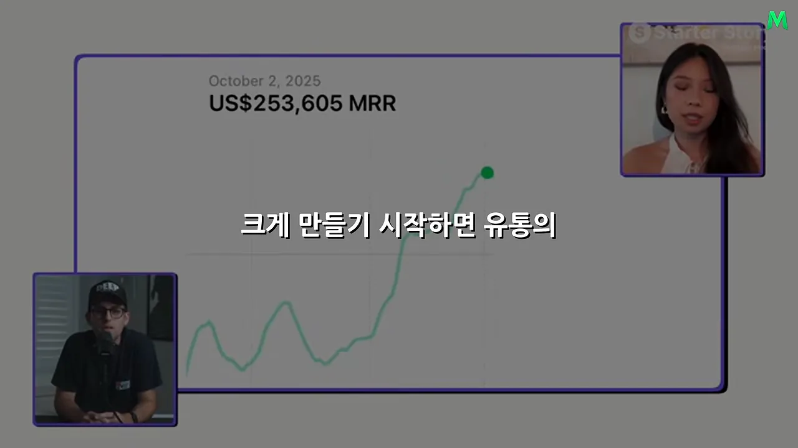
이 매출 뒤에는 엄청난 조회수가 있어요. 영상이 말로 읽어 준 숫자를 같은 눈금으로 그려 보면 이래요. 맨 아래 막대가 지금 세 플랫폼을 합친 한 달 조회수예요.
아래 두 장은 원래 인터뷰가 보여 준 조회수 대시보드예요. 왼쪽은 최근 30일 조회수 91.3M(9,130만 회)이에요. 니콜이 '몇 달 전 기록인데 그때 월 1억 회쯤'이라고 말한 화면이에요. 오른쪽은 최근 7일 조회수 408.8M(약 4억 회)으로, 일주일에 4억 회를 넘긴 그 시기예요.
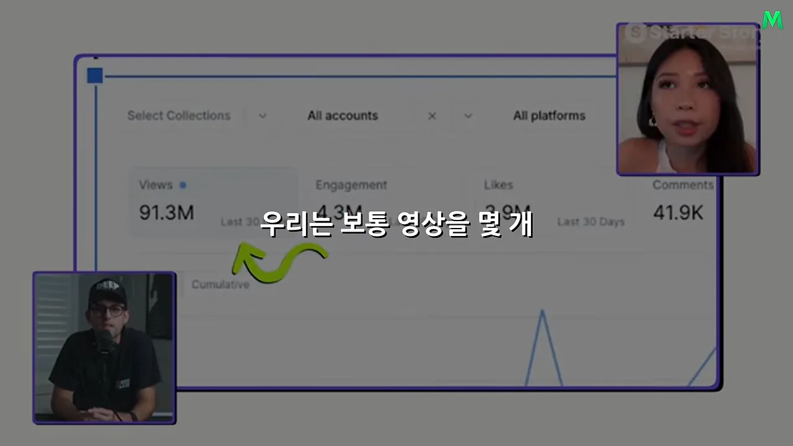
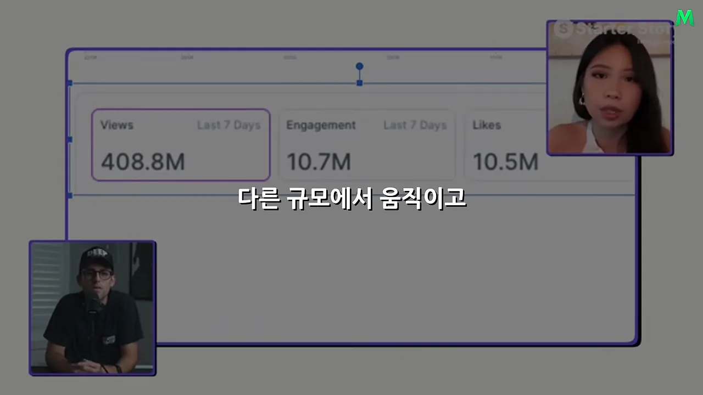
통하는 유통 방식을 먼저 찾아요
보통은 영상을 몇 개 올리고 결과를 기다려요. 하나가 잘되면 비슷한 걸 조금 더 만들고, 안 되면 다른 길을 찾죠. 니콜은 가장 빠르게 키우던 때 크리에이터 200명 넘게를 동시에 관리했어요. 그렇다고 처음부터 200명을 모은 건 아니에요. 첫 일은 '이 앱에 통하는 유통 방식'을 찾는 거예요.
머리로 고르지 말고 시장에서 확인해요
'우린 틱톡을 해야 해'라고 미리 정하지 않아요. 가능한 방법을 실제로 시험해요. 원래 인터뷰가 정리한 목록이 아래 슬라이드예요. 왼쪽은 조회수 대시보드, 오른쪽은 시험해 볼 다섯 가지예요. 위에서부터 레딧 마케팅, 틱톡·인스타그램의 얼굴 없는 콘텐츠(손글씨 메모로 'different variations of CTAs'), 얼굴이 나오는 UGC(User-Generated Content)(AI UGC, UGC creators), 유료 광고, 인플루언서 마케팅이에요.
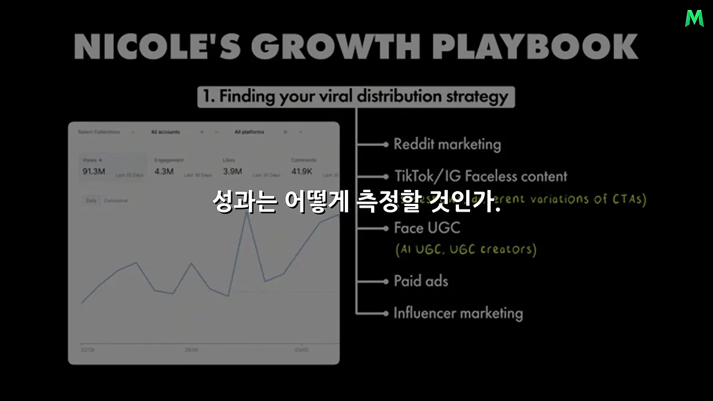
| 방식 | 어떤 모습인가요 | 필요한 것 |
|---|---|---|
| 레딧 | 커뮤니티에 글을 올려 알리는 방식 | 시간 |
| 얼굴 없는 콘텐츠 | 사람이 나오지 않는 틱톡·인스타그램 영상, 이미지를 넘기는 슬라이드형 | 시간 |
| UGC | 일반 사용자가 직접 써 보고 소개하는 듯한 영상. 실제 크리에이터나 AI로 만들어요 | 크리에이터 또는 AI 도구 |
| 유료 광고·인플루언서 | 돈을 내고 노출을 사는 방식 | 자본 |
한 방식을 2~3주 동안 끝까지 파요
시험을 겉만 건드리고 그만두면 안 돼요. 니콜은 한 전략을 고르면 2~3주 동안 그 안에서 할 수 있는 변형을 최대한 해 봐요. 얼굴 없는 콘텐츠가 가능성이 보이면 한 가지 형태만 만들지 않아요. 아래 두 장이 그 예예요. 왼쪽은 스킨케어 영상으로, 'Apply under eye for 10-15 min then rinse it off' 같은 사용법 자막이 붙어 있어요. 오른쪽은 운하와 알록달록한 건물을 배경으로 찍은 짧은 영상이에요.
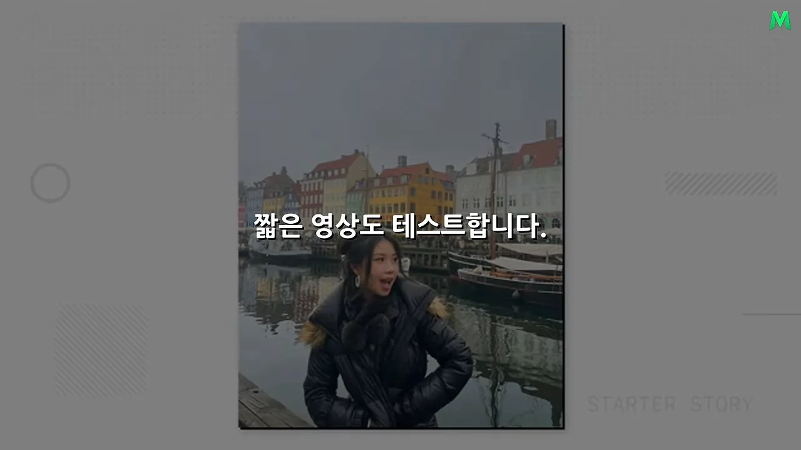
바꿔 볼 것은 생각보다 많아요. 슬라이드형과 짧은 영상, 처음 시선을 붙잡는 부분, 콘텐츠가 끝난 뒤 앱을 쓰게 만드는 방식(원래 인터뷰의 CTA(Call To Action))이에요. 아래 화면은 실제로 잘된 콘텐츠예요. 'POV: This is milia!'(눈가에 생기는 작은 흰 알갱이인 비립종을 가리키는 말이에요)라는 문구가 붙은 눈가 클로즈업 영상이 조회수 153K를 기록했어요.
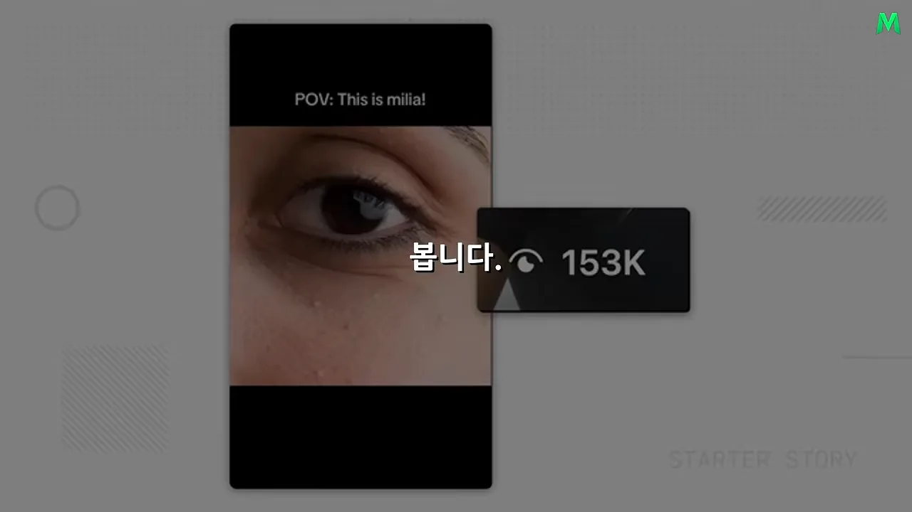
충분히 시험한 다음에 볼 건 세 가지예요. 무엇이 반복해서 반응을 얻는지, 어떤 형태가 꾸준히 조회수를 내는지, 어떤 콘텐츠가 실제 앱 사용으로 이어지는지예요. 여기까지는 아직 실험 단계예요. 이긴 패턴 하나를 찾는 순간부터 일이 완전히 달라져요.
크리에이터를 뽑고, 가르치고, 관리해요
이긴 패턴을 찾은 뒤부터는 니콜 혼자 잘하면 되는 게 아니에요. 다른 사람도 같은 결과를 내게 만들어야 해요. 여기서부터 유통이 시스템이 돼요.
창업자가 먼저 가장 깊이 알아야 해요
니콜의 원칙은 하나예요. 창업자가 자기 앱과 콘텐츠를 크리에이터보다 더 깊이 이해해야 해요. 크리에이터를 고용했다고 마케팅에 대한 이해까지 넘기면 안 돼요. 어떤 콘텐츠가 왜 잘되는지, 사람들이 어디서 관심을 갖는지, 어떤 표현이 앱으로 이어지는지 알아야 남을 가르칠 수 있어요.
그래서 처음부터 수십 명을 뽑지 않아요. 직접 콘텐츠를 만들어 봐도 되고, 카메라 앞이 부담스러우면 크리에이터 2~10명으로 시작해요. 이 작은 그룹이 좋은 결과를 낼 때까지 함께 고쳐요.
몇 명으로도 성공 공식을 만들지 못했는데 사람만 100명으로 늘리면 어떻게 될까요? 잘못된 방식이 100배 빠르게 반복될 뿐입니다.
— 영상 09:23
반대로 다섯 명에게 가르쳤는데 여러 명이 반복해서 좋은 결과를 내면, 사람이 늘어도 같은 방식을 전할 수 있다는 신호예요. 재현이 확인된 다음에야 규모를 키워요. 원래 인터뷰는 이 단계를 'Proper UGC System'이라고 부르고, 아래처럼 크리에이터들의 영상 썸네일을 줄지어 보여 줘요.
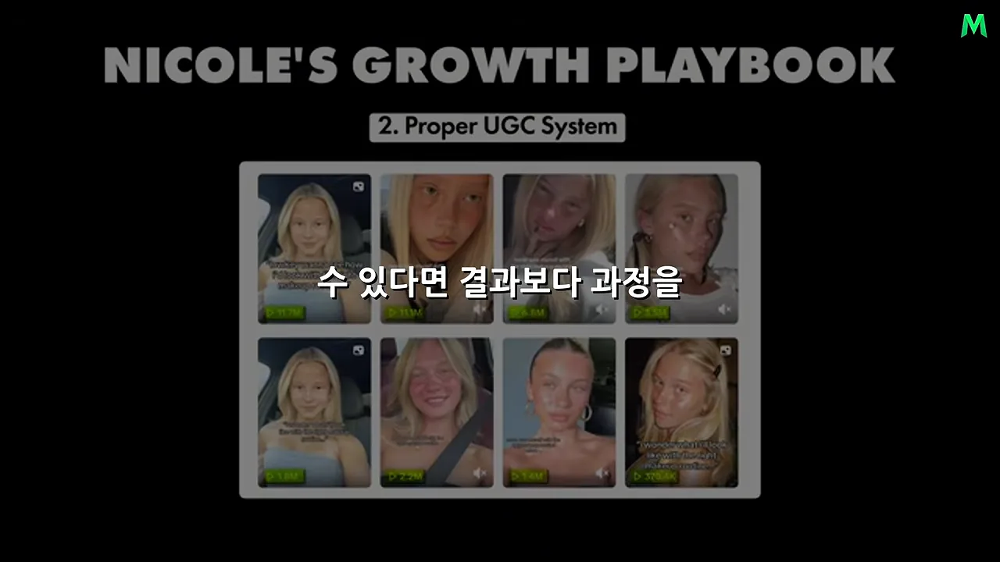
네 단계로 크리에이터를 키워요
규모를 키울 때 니콜이 밟는 단계를 한 장에 모으면 아래와 같아요. 영상은 이 단계를 여러 장면에 나눠 말로 설명해요.
찾기. 아무나 뽑지 않아요. 먼저 콘텐츠 전략을 정하고, 거기 맞는 사람을 찾아요. 카메라를 보고 계속 말하는 영상이면 말을 자연스럽게 잘하는 사람이, 반응 영상이면 표정과 리액션이 좋은 사람이 맞아요. 찾는 길은 두 가지예요. UGC 커뮤니티, 인스타그램, 레딧에 지원 양식을 올려 신청을 받거나, 회사가 소규모 인플루언서를 직접 찾아 먼저 연락해요. 커지면 이 일만 맡는 사람을 둬요. 아래 슬라이드의 'Step 1: Sourcing'이 이 단계예요.
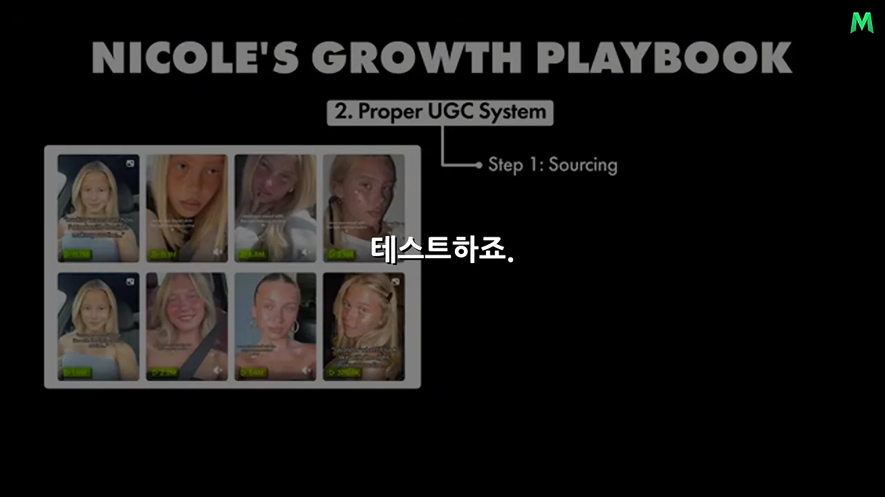
교육. 좋은 사람이 알아서 좋은 콘텐츠를 만들길 기대하지 않아요. 먼저 인터뷰로 캠페인을 진지하게 할 사람인지 확인해요. 통과하면 앱에 맞춘 교육 과정을 줘요. 스프라우트에는 크리에이터만을 위한 과정이 따로 있어요. 잘된 콘텐츠가 어떤 모습인지, 무엇을 참고할지, 어떻게 구성할지를 영상과 모듈로 만들어 뒀고, 모듈마다 끝에 퀴즈가 있어요. 영상을 틀어 놓고 넘긴 게 아니라 정말 이해했는지 보는 거예요. 외주 크리에이터를 쓰는 수준이 아니라 회사가 학교를 운영하는 셈이에요.
이 숫자가 중요한 이유가 있어요. 바이럴을 만드는 특별한 한 명을 우연히 찾은 게 아니에요. 여러 사람이 같은 교육을 받고 높은 확률로 좋은 결과를 내기 시작했어요. 그 순간 개인의 감각이 조직의 시스템이 돼요. 많은 회사가 '정말 잘하는 크리에이터 한 명 어디 없을까'를 찾을 때, 니콜은 '어떻게 하면 더 많은 사람이 잘할 수 있을까'를 고민해요.
사람이 늘면 관리와 데이터가 붙어요
관리. 수십, 수백 명이 되면 관리가 문제예요. 누가 어떤 콘텐츠를 만드는지 봐야 하고, 성과가 떨어지는 사람에겐 피드백을 줘야 하고, 새로 통하는 방식은 빨리 모두에게 퍼뜨려야 해요. 니콜은 팀에 맞는 방식을 골라요.
- 디스코드 같은 공간에서 크리에이터를 관리해요.
- 2주마다 피드백 미팅을 하거나, 한 달에 한 번 전체 점검을 해요.
- 성과가 가장 좋은 크리에이터를 아예 팀 안으로 데려와 다른 크리에이터를 관리하게 해요. 해 본 사람이 가르치는 구조예요.
고도화. 조직이 커지면 시스템을 더 다듬어요. 기존 크리에이터가 새 크리에이터를 소개하면 보상을 받는 추천 구조를 만들고, 콘텐츠가 많아지면 데이터를 한눈에 보는 대시보드를 붙여요. 누가 잘하는지, 어떤 형식이 크는지, 어디서 성과가 떨어지는지 보고 다음 행동을 정해요.
그래서 니콜은 매일 아침 '오늘은 무슨 영상을 만들까'를 처음부터 고민하지 않아요. 콘텐츠가 시스템 안에서 계속 나오고, 데이터가 쌓이고, 잘되는 방식이 발견되면 다른 사람에게 전해져요.
운을 통제하지 않고, 운이 닿는 면적을 넓혀요
니콜도 영상 하나가 처음 터지는 데는 운이 작용할 수 있다고 봐요. 하지만 계속 터지는 건 운만으로 설명하기 어렵다고 해요.
I think you can always maximize the surface area of your luck.
운이 닿을 수 있는 면적은 언제든 최대한 넓힐 수 있다고 생각해요.
— 원래 인터뷰 (이 영상 14:21 부근)
한 달에 콘텐츠 두 개를 올리는 사람과 수백 개를 체계적으로 시험하는 사람은 같은 게임을 하고 있지 않아요. 무엇이 터질지는 예측할 수 없지만, 시도 횟수를 늘리고, 잘되는 패턴을 빨리 찾고, 그걸 조직적으로 반복하면 성공 확률은 달라질 수밖에 없어요.
AI 시대에 왜 유통이 더 중요할까요
내레이터는 여기서 니콜의 방식이 AI 시대에 왜 더 중요해지는지 짚어요. AI를 쓰면 예전보다 훨씬 빨리 코드를 만들 수 있고, 기능 하나를 추가하는 시간도 계속 줄어요. 아이디어가 있어도 기술 장벽 때문에 못 만들던 사람이 많았는데, 그 장벽이 더 낮아질 가능성이 커요.
쉬워진 만큼 귀해지는 것
그런데 반대편이 있어요. 내가 쉽게 만들 수 있으면 남도 쉽게 만들어요. 만드는 사람이 많아지고 비슷한 앱도 빨리 생겨요. 그러면 귀해지는 건 고객의 관심이에요. 앱을 만드는 능력은 흔해지고, 고객을 데려오는 능력은 오히려 귀해져요.
아무리 좋은 기능을 만들어도 사람들이 존재를 모르면 매출은 없어요. 경쟁자보다 기능 하나 더 넣었다고 수백만 명이 알아서 오지도 않고요. 질문이 '무엇을 만들 수 있나'에서 '어떻게 사람들이 이걸 발견하게 할까'로 옮겨 가요. 니콜이 직접 코딩하지 않고도 앱을 여러 번 키울 수 있었던 이유가 여기 있어요. 만드는 능력이 아니라 발견되게 하는 구조에 걸었어요.
진짜 자산은 반복 가능한 방식이에요
첫 앱에서 배운 게 두 번째 앱으로 가고, 두 번째에서 다듬은 방식이 세 번째와 네 번째 앱에 쓰여요. 그래서 중요한 자산은 특정 영상 하나도, 크리에이터 한 명도, 특정 플랫폼의 알고리즘도 아니에요. 잘되는 걸 발견했을 때 남도 반복할 수 있는 방식으로 바꾸는 능력이에요.
이 차이는 초보자와 높은 수준에서 사업하는 사람을 나란히 놓으면 잘 보여요.
| 초보자 | 높은 수준 | |
|---|---|---|
| 붙잡는 질문 | 이번엔 무엇을 찍을까? | 100명이 좋은 콘텐츠를 계속 만들게 하려면 무엇이 필요할까? |
| 하는 일 | 기획, 촬영, 편집, 업로드를 혼자 해요 | 누구를 뽑고, 어떻게 가르치고, 어떻게 피드백하고, 성과를 어떻게 잴지 정해요 |
| 잘됐을 때 | 비슷한 걸 다시 만들어요 | 잘된 패턴을 얼마나 빨리 팀 전체에 전할지 고민해요 |
| 안됐을 때 | 의욕이 떨어질 수 있어요 | 더 이상 안 통하는 부분을 고쳐요 |
| 규모 | 한 달에 콘텐츠 몇 개 | 200명이 동시에 콘텐츠를 만드는 조직 |
내레이터는 이걸 '과정을 작은 단계로 쪼갠다'고 정리해요. 찾고, 테스트하고, 검증하고, 교육하고, 관리하고, 측정하고, 잘되는 건 키우고, 안 통하면 다시 고쳐요. 감각만으로 사업하지 않는다는 거예요. 둘 사이에는 노력량이 아니라 시스템의 차이가 있어요.
결과보다 과정을 즐기라는 조언
원래 인터뷰의 마지막 질문은 '과거의 자신에게 한마디 해 줄 수 있다면?'이에요. 니콜의 답은 숫자와는 거리가 있었어요.
try to always enjoy the journey instead of the results.
결과보다 과정을 늘 즐기려고 해 보세요.
— 원래 인터뷰 (이 영상 18:13 부근)
이유는 사업에 끝이 없기 때문이에요. 니콜은 '늘 더 큰 숫자, 더 많은 사용자가 있다'고 말해요. 내레이터는 이를 예로 풀어요. 사용자 10만 명을 만들면 100만 명을 원하고, 월 매출 1억 원을 넘기면 2억, 그다음엔 5억을 봐요. 결과만 바라보면 목표를 이룬 기쁨은 잠깐이고 곧 새 목표가 생겨요.
그래서 니콜은 자신이 무언가를 만드는 사람이라는 사실 자체를 즐기라고 해요. 앱을 만들고, 새 콘텐츠를 시험하고, 어제보다 조금 나은 시스템을 만들고, 안된 걸 고쳐 보는 과정이요. 성장을 포기하라는 말은 아니에요. 니콜은 누구보다 높은 숫자를 좇고 있어요. 다만 그러는 동안 지금 하는 일의 재미까지 잃지는 말라는 거예요.
영상 하나가 성장 엔진이 되기까지
영상은 끝에서 니콜의 방식을 한 번 더 이어서 정리해요. 가장 인상적인 건 월 수억 원 매출도, 월 5억 회 가까운 조회수도 아니에요. 그건 결과일 뿐이고, 우연히 한 번 잘된 일을 시스템으로 바꿨다는 게 핵심이에요. 그 흐름을 그림으로 옮기면 이래요.
flowchart LR A["여러 방법 시도"] --> B["하나가 통함"] --> C["깊게 테스트"] --> D["몇 명에게 가르쳐 재현 확인"] D --> E["교육 과정 만들기"] --> F["사람 늘리기"] --> G["관리 구조 붙이기"] --> H["데이터 확인"] H -->|"다시 개선"| C
우연한 성공은 누구에게나 올 수 있어요. 하지만 그 성공을 분해하고, 왜 됐는지 이해하고, 남도 똑같이 할 수 있는 구조로 만들면 사업은 개인의 능력을 넘어서기 시작해요. AI로 제품 만들기가 쉬워질수록 경쟁자는 늘고, 고객에게 닿는 능력과 그 과정을 시스템으로 만드는 능력이 더 큰 차이를 만들 거라는 게 영상의 결론이에요.